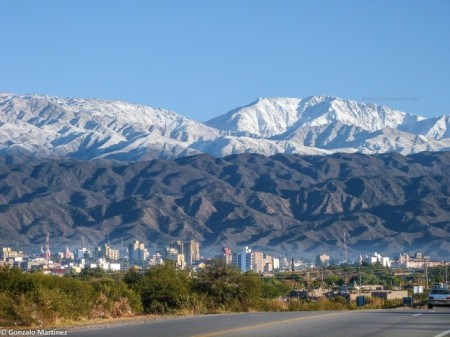

About me
My name is Florencia from Argentina. I am studying Software Development because I love to learn and would like to invest in my cosmetic boutique laboratory . I'm married to Marcos and have 3 beautiful childreN. I love to teach them about the Gospel.
This is the city of Catamarca, where we live. It is medium city in a northern province of the country. It has beautiful mountain sights and people are really nice and welcoming. We have a pleasant and tranquil life here.
Favorite scripture
7 Blessed is the man that trusteth in the Lord, and whose hope the Lord is. 8 For he shall be as a tree planted by the waters, and that spreadeth out her roots by the river, and shall not see when heat cometh, but her leaf shall be green; and shall not be careful in the year of drought, neither shall cease from yielding fruit.